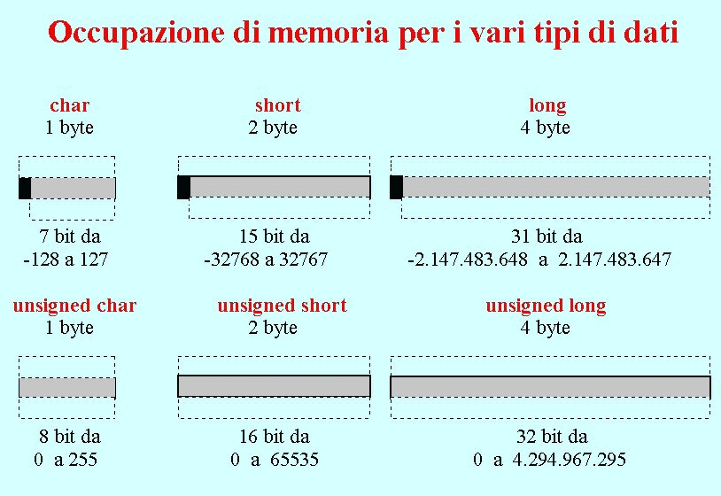
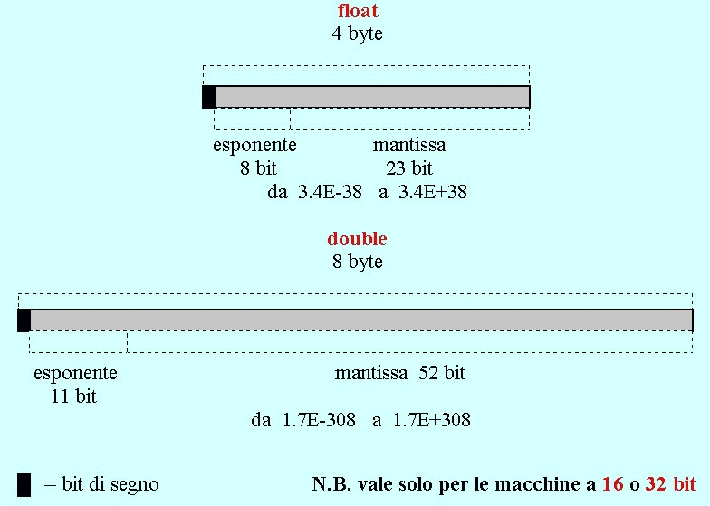

Tipi, Variabili, Costanti
Tipi delle variabili
Classificazione delle variabili in tipi
Si dice che il C++ (come il C) è un linguaggio "tipato", per il fatto che pretende che di ogni variabile venga dichiarato il tipo di appartenenza.
Definizione di tipo di una variabile
Il tipo è un termine di classificazione che raggruppa tutte quelle variabili che sono memorizzate nello stesso modo e a cui si applica lo stesso insieme di operazioni.
Controllo forte sui tipi
Il C++ esercita un forte controllo sui tipi (strong type checking), nel senso che regola e limita la conversione da un tipo all'altro (casting) e controlla l'interazione fra variabili di tipo diverso.
Tipi intrinseci del linguaggio
In C++ esistono solo 5 tipi, detti "intrinseci o "nativi" del linguaggio :
int numero intero di 2 o 4 byte char numero intero di 1 byte (interpretabile come codice ascii di un carattere) float numero in virgola mobile con 6-7 cifre significative (4 byte ) double numero in virgola mobile con 15-16 cifre significative (8 byte ) bool valore booleano: true o false (1 byte ) In realtà il numero di tipi possibili è molto più grande, sia perché ogni tipo nativo può essere specializzato mediante i qualificatori di tipo, sia perché il programma stesso può creare propri tipi personalizzati (detti "tipi astratti")
Dichiarazione e definizione degli identificatori
Cos'è un identificatore ?
Un identificatore è un nome simbolico che il programma assegna a un'entità del linguaggio, per modo che il compilatore sia in grado di riconoscere quell'entità ogni volta che incontra il nome che le è stato assegnato.
Sono pertanto identificatori i nomi delle variabili, delle funzioni, degli array, dei tipi astratti, delle strutture, delle classi ecc...
Ogni identificatore consiste di una sequenza di lettere (maiuscole o minuscole) e di cifre numeriche, senza caratteri di altro tipo o spazi bianchi (a parte l'underscore "_", che è considerato una lettera). Il primo carattere deve essere una lettera.
Non sono validi gli identificatori che coincidono con le parole-chiave del linguaggio (come da Tabella sotto riportata).
Esempi di identificatori validi: hello deep_space9 a123 _7bello
Esempi di identificatori non validi:
un amico (contiene uno spazio) un'amica (contiene un apostrofo) 7bello (il primo carattere non è una lettera) for (è una parola-chiave del C++)
Tabella delle parole-chiave del C++
auto bool break case catch char class const const_class continue default delete do double dynamic_cast else enum explicit extern false float for friend goto if inline int long main mutable namespace new operator private protected public register reinterpret_class return short signed sizeof static static_cast struct switch template this throw true try typedef typeid typename union unsigned using virtual void volatile wmain while
Dichiarazione obbligatoria degli identificatori
In C++ tutti gli identificatori di un programma devono essere dichiarati prima di essere utilizzati (non necessariamente all'inizio del programma), cioè deve essere specificato il loro tipo. Per dichiarare un identificatore bisogna scrivere un'istruzione apposita in cui l'identificatore è preceduto dal tipo di appartenenza. Es.
int Variabile_Intera;
Più identificatori dello stesso tipo possono essere dichiarati nella stessa istruzione e separati l'uno dall'altro da una virgola. Es.int ore, giorni, mesi;
Definizione obbligatoria degli identificatori
Un'istruzione di dichiarazione si limita ad informare il compilatore del C++ che un certo identificatore appartiene a un certo tipo, ma può non essere considerata in fase di esecuzione del programma. Quando una dichiarazione comporta anche un'operazione eseguibile, allora si dice che è anche una definizione.
Per esempio, l'istruzione: extern int error_number;
è soltanto una dichiarazione, in quanto (come vedremo più avanti) con lo specificatore extern informa il compilatore (o meglio il linker) che la variabile error_number è definita in un altro file del programma (e quindi l'istruzione serve solo ad identificare il tipo della variabile e a permetterne l'utilizzo);
mentre l'istruzione: int error_number;
è anche una definizione, in quanto non si limita ad informare il compilatore che la variabile error_number è di tipo int, ma crea la variabile stessa, allocando un'apposita area di memoria.
Per meglio comprendere la differenza fra dichiarazione e definizione, si considerino le seguenti regole:
tutte le definizioni sono anche dichiarazioni (ma non è vero il contrario);
deve esserci una ed una sola definizione per ogni identificatore che appare nel programma (o meglio, per ogni identificatore che appare in uno stesso ambito, altrimenti si tratta di identificatori diversi, pur avendo lo stesso nome), mentre possono esserci più dichiarazioni (purchè non in contraddizione fra loro);
un identificatore deve essere dichiarato prima del suo utilizzo, ma può essere definito dopo (o altrove, come abbiamo visto nell'esempio precedente);
la semplice dichiarazione (cioè senza specificatore) di una variabile di tipo nativo è sempre anche una definizione, in quanto comporta l'allocazione di un'area di memoria;
Qualificatori e specificatori di tipo
Definizione di "qualificatore" e "specificatore"
Un qualificatore di tipo è una parola-chiave che, in una istruzione di dichiarazione, si premette a un tipo nativo, per indicare il modo in cui la variabile dichiarata deve essere immagazzinata in memoria. Se il tipo è omesso, è sottointeso int.
Esistono 4 qualificatori: short, long, signed, unsigned.Uno specificatore è una parola-chiave che, in una istruzione di dichiarazione, si premette al tipo (che può essere qualsiasi, anche non nativo) e all'eventuale qualificatore, per definire ulteriori caratteristiche dell'entità dichiarata. Esistono svariati tipi di specificatori, con funzioni diverse: li introdurremo via via durante il corso, quando sarà necessario.
Qualificatori short e long
I qualificatori short e long si applicano al tipo int. Essi definiscono la dimensione della memoria occupata dalle rispettive variabili di appartenenza. Purtroppo lo standard non garantisce che tale dimensione rimanga inalterata trasportando il programma da una piattaforma all'altra, in quanto essa dipende esclusivamente dalla piattaforma utilizzata. Possiamo solo dire così: a tutt'oggi, nelle implementazioni più diffuse del C++ , il qualificatore short definisce variabili di 16 bit (2 byte) e il qualificatore long definisce variabili di 32 bit (4 byte), mentre il tipo int "puro" definisce variabili di 32 bit (cioè long e int sono equivalenti).
Vedremo fra poco che esiste un operatore che permette di conoscere la effettiva occupazione di memoria dei diversi tipi di variabili.
Per completezza aggiungiamo che il qualificatore long si può applicare anche al tipo double (la cosidetta "precisione estesa"), ma, da prove fatte sulle macchine che generalmente usiamo, è risultato che conviene non applicarlo!
Qualificatori signed e unsigned
I qualificatori signed e unsigned si applicano ai tipi "interi" int e char. Essi determinano se le rispettive variabili di appartenenza possono assumere o meno valori negativi.
E' noto che i numeri interi negativi sono rappresentati in memoria mediante l'algoritmo del "complemento a 2" (dato un numero N rappresentato da una sequenza di bit, -N si rappresenta invertendo tutti i bit e aggiungendo 1). E' pure noto che, in un'area di memoria di m bit, esistono 2m diverse possibili configurazioni (cioè un numero intero può assumere 2m valori). Pertanto un numero con segno ha un range (intervallo) di variabilità da -2m-1 a +2m-1-1, mentre un numero assoluto va da 0 a +2m-1.
Se il tipo è int, i qualificatori signed e unsigned possono essere combinati con short e long, dando luogo, insieme a signed char e unsigned char, a 6 diversi tipi interi possibili.
E i tipi int e char "puri" ? Il tipo int è sempre con segno (e quindi signed int e int sono equivalenti), mentre, per quello che riguarda il tipo char, ancora una volta dipende dall'implementazione: "in generale" (ma non sempre) coincide con signed char.


L'operatore sizeof
L'operatore sizeof(operando) restituisce la lunghezza in byte di identificatori appartenenti a un dato tipo; operando specifica il tipo in esame o un qualunque identificatore dichiarato di quel tipo. Per esempio, sizeof(int) può essere usato per sapere se il tipo int è di 2 o di 4 byte.
Confronto dei risultati fra diverse architetture
| Lunghezza della voce di memoria in byte | |||
|---|---|---|---|
| tipo | PC (32 bit)
con Windows |
PC (32 bit)
con Linux |
DEC ALPHA (64 bit)
con Unix |
| char | 1 |
1 |
1 |
| short | 2 |
2 |
2 |
| int | 4 |
4 |
4 |
| long | 4 |
4 |
8 |
| float | 4 |
4 |
4 |
| double | 8 |
8 |
8 |
| long double | 8 |
12 |
16 |
| bool | 1 |
1 |
1 |
Definizione con Inizializzazione
Abbiamo visto finora che ogni dichiarazione o definizione di un identificatore consiste di tre parti:
- uno o più specificatori (opzionali);
- il tipo (eventualmente preceduto da uno o più qualificatori);
- l'identificatore.
NOTA
Per completezza aggiungiamo che a sua volta l'identificatore può essere preceduto (e/o seguito) da un "operatore di dichiarazione".
I più comuni operatori di dichiarazione sono:
* puntatore prefisso *const puntatore costante prefisso & riferimento prefisso [] array suffisso ( ) funzione suffisso Ne parleremo al momento opportuno.
Esiste una quarta parte, opzionale, che si chiama inizializzatore (e che si può aggiungere solo nel caso della definizione di una variabile): un inizializzatore è un'espressione che definisce il valore iniziale assunto dalla variabile, ed è separato dal resto della definizione dall'operatore "=".
Quindi, ricapitolando (nel caso che l'identificatore sia il nome di una variabile):
la semplice dichiarazione assegna un tipo alla variabile;
la definizione crea la variabile in memoria, ma non il suo contenuto, che rimane, per il momento, indefinito (forse resta quello che c'era prima nella stessa locazione fisica di memoria);
la definizione con inizializzazione attribuisce un valore iniziale alla variabile definita.
Es. unsigned peso = 57;
n.b. un'inizializzazione è concettualmente diversa da un'assegnazione
In C++ i valori di inizializzazione possono essere dati non solo da costanti, ma anche da espressioni che includono variabili definite precedentemente.
Es. int lordo = 45; int tara = 23; int netto = lordo-tara;
Il tipo "booleano"
Il tipo bool non faceva parte inizialmente dei tipi nativi del C e solo recentemente è stato introdotto nello standard del C++.
Una variabile "booleana" (cioè dichiarata bool) può assumere solo due valori: true e false. Tuttavia, dal punto di vista dell'occupazione di memoria, il tipo bool è identico al tipo char, cioè occupa un intero byte (anche se in pratica utilizza un solo bit).
Nelle espressioni aritmetiche e logiche valori booleani e interi possono essere mescolati insieme: se un booleano è convertito in un intero, per definizione true corrisponde al valore 1 e false corrisponde al valore 0; viceversa, se un intero è convertito in un booleano, tutti i valori diversi da zero diventano true e zero diventa false. Esempi:
bool b = 7; ( b è inizializzata con true ) int i = true; ( i è inizializzata con 1 ) int i = 7 < 2; ( espressione falsa: i è inizializzata con 0 )
Le Costanti in C++
Costanti intere
Una costante intera è un numero decimale (base 10), ottale (base 8) o esadecimale (base 16) che rappresenta un valore intero positivo o negativo. Un numero senza prefissi o suffissi è interpretato in base decimale e di tipo int (o unsigned int se la costante specificata è maggiore del massimo numero positivo signed int). La prima cifra del numero non deve essere 0.
Un numero con prefisso 0 è interpretato in base ottale e di tipo int (o unsigned int).
Es. a = 0100; (in a è memorizzato il numero 64)
Un numero con prefisso 0x o 0X è interpretato in base esadecimale e di tipo tipo int (o unsigned int). Le "cifre" a,b,c,d,e,f possono essere scritte sia in maiuscolo che in minuscolo.
Es. a = 0x1B; (in a è memorizzato il numero 27)In qualunque caso, la presenza del suffisso L indica che il numero deve essere di tipo long int, mentre la presenza del suffisso U indica che il numero deve essere di tipo unsigned int.
Es. a = 0x1BL; a = 0x1BU;
Costanti in virgola mobile
Una costante in virgola mobile è un numero decimale (base 10), che rappresenta un valore reale positivo o negativo.
Può essere specificato in 2 modi:
parte_intera.parte_decimale (il punto è obbligatorio)
notazione esponenziale (il punto non è obbligatorio)
Esempi: 15.75 -1.5e2 25E-4 10.
In qualunque notazione, se il numero è scritto senza suffissi, è assunto di tipo double. Per forzare il tipo float bisogna apporre il suffisso f (o F)
Es. 10.3 è di tipo double 1.4e-5f è di tipo float
Costanti carattere
Una costante carattere è rappresentata inserendo fra singoli apici un carattere stampabile oppure una sequenza di escape.
Esempi:
'A' carattere A '\n' carattere newline '\003' carattere cuoricino In memoria un carattere è rappresentato da un numero intero di 1 byte (il suo codice ascii). Le conversioni fra tipo char e tipo int sono automatiche (purché il valore intero da convertire sia compreso nel range del tipo char) e quindi i due tipi possono essere mescolati insieme nelle espressioni aritmetiche.
Per esempio, l'operazione: MiaVar = 'A' + 1;
è ammessa, se la variabile MiaVar è stata dichiarata int oppure char.Il carattere NULL ha codice ascii 0 e si rappresenta con '\0' (da non confondere con il carattere 0 decimale che ha codice ascii 48).
Costanti stringa
Una costante stringa è rappresentata inserendo un insieme di caratteri (fra cui anche sequenze di escape) fra doppi apici (virgolette).
Es. "Ciao Universo\n"In C++ (come in C) non esistono le stringhe come tipo intrinseco. Infatti esse sono definite come sequenze (array) di caratteri, con una differenza rispetto ai normali array: il compilatore, nel creare una costante stringa, aggiunge automaticamente un NULL dopo l'ultimo carattere (si dice che le stringhe sono "array di caratteri null terminated"). E quindi, per esempio, 'A' e "A" sono due costanti diverse :
'A'
è un carattere e occupa 1 byte (con il numero 65) "A"
è una stringa e occupa 2 byte (con i numeri 65 e 0)
Per inizializzare una stringa bisogna definirla di tipo char e aggiungere al nome della variabile l'operatore di dichiarazione [].
Es. char MiaStr[] = "Sono una stringa";
Specificatore const
Se nella definizione di una variabile, si premette al tipo (e ai suoi eventuali qualificatori), lo specificatore const, il contenuto della variabile non può più essere modificato. Ovviamente una variabile definita const deve sempre essere inizializzata.
Es. const double pigreco = 3.14159265385;
L'uso di const è fortemente consigliato rispetto all'alternativa di scrivere più volte la stessa costante nelle istruzioni del programma; infatti se il programmatore decide di cambiarne il valore, e ha usato const, è sufficiente che modifichi la sola istruzione di definizione.
D'ora in poi, quando parleremo di "costanti", intenderemo riferirci a "variabili definite const" (distinguendole dalle costanti "dirette" che saranno invece chiamate "costanti letterali" o "literals").